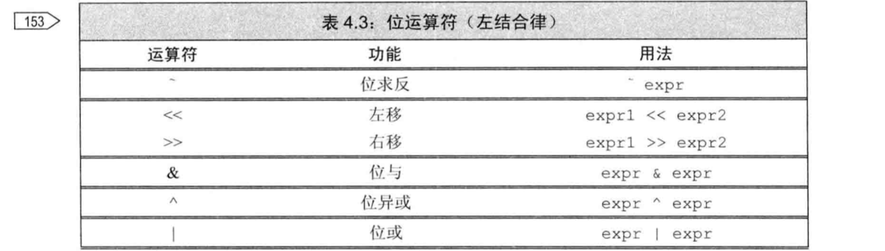

1.开始
- 输出运算符和输入运算符类似，都返回其左侧运算对象作为其计算结果
- 从键盘输入文件结束符
- 在windows系统中，Ctrl+Z，然后按Enter或Return键
- 在Unix系统中，文件结束符是Ctrl+D
- 使用文件重定向
1
2addItems.exe是可执行文件，下面的命令将从一个infile的文件读取销售记录到cin，并将结果（cout）写入到一个名为outfile的文件中。
addItems <infile >outfile
2.变量和基本类型
寻址的最小单元为byte
存储的基本单元为字
通常float以1个字（32比特）表示，double为2个字（64比特），long double以3/4个字表示。
char类型会表现为带符号或者无符号的，具体视编译器而定。
当我们给带符号类型一个超出他表示范围的值时，结果是未定义的。此时，可能可以继续工作也可能崩溃或产生垃圾数据。
变量初始化
1
2
3
4int unit_sold = 0;
int unit_sold = {0}; //列表初始化
int unit_sold{0}; //列表初始化
int unit_sold(0);在函数体内部，如果试图初始化一个extern关键字标记的变量，将引发错误。
变量只能被定义一次，但可以被多次声明
1
2extern int i; //声明i
int i; //声明并定义i在内层作用域中访问外层作用域可以使用操作域符
::value
复合类型
- 一条声明语句由一个基本数据类型和一个紧随其后的声明符列表组成。
&和*符号
1 | //&和*的上下文决定了符号的意义 |
引用
- 引用必须被初始化，一旦初始化完成，引用将和他的初始值对象一直绑定在一在。
- 因为引用本身不是一个对象，所以不能定义引用的引用。
指针
- 建议初始化所有指针。
- 指向指针的引用
1
2
3int i = 42;
int *p;
int *&r = p; //离变量名最近的符号对变量的类型由最直接的影响，因此，r是一个引用
const限定符
const对象必须初始化
建议：对于const变量，不管是声明还是定义，都添加extern关键字，这样只需定义一次就可以了。
指针和const
1
2const double pi = 3.14;
const double *cptr = π //指向常量的指针顶层const
顶层const表示指针本身是个常量，底层const表示指针所指的对象是一个常量。
一般的，顶层const可以表示任意的对象是常量，这点对任意数据类型都适用。底层const则与指针和引用等复合类型的基本类型部分有关。比较特殊的是指针类型既可以是顶层const，也可以是底层const。
当执行对象的拷贝操作时，顶层const不受什么影响。底层const能忽视，非常量可以转换成常量，反之则不行。
1
2
3
4
5
6
7
8
9
10
11
12
13
14
15int i = 0;
int *const p1 = &i; //不能改变p1的值，这是一个顶层const
const int ci = 42; //不能改变ci的值，这是一个顶层const
const int *p2 = &ci; //允许改变p2的值，这是一个底层const
const int *const p3 = p2; //靠右的const是顶层const，靠左的是底层const
const int &r = ci; //用于引用的const都是底层const
// 拷贝ci的值
i = ci; //正确，拷贝ci的值，ci是一个顶层const
p2 = p3; //正确：p2和p3指向的对象类型相同，p3顶层const部分不受影响
// 底层const不能忽视。当执行对象的拷贝操作时，拷入和拷出的对象必须具有相同的底层const资格，或者两个对象的数据类型必须能够转换。一般来说，非常量可以转换成常量，反之则不行。
int *p = p3; //错误：p3包含底层const的定义，而p没有
p2 = p3; //正确：p2和p3都是底层const
p2 = &i； //正确：int*能转换成const int *
int &r = ci; //错误：不同的int&不能绑定到int常量上
const int &r2 = i; //正确：const int&可以绑定到一个普通int上
字面值类型
- 常量表达式的值在编译时就得到类型，因此对声明constexpr时用到的类型必须有所限制。算术类型、指针和引用都属于字面值类型。自定义类型，IO库和string类型不属于字面值类型
auto类型说明符
- auto一般会忽略顶层const，底层const会保留下来。
decltype和引用
- 如果decltype使用的是一个不加括号的变量，则得到的结果就是该变量的类型；如果给变量加上一层或多层括号，编译器就会把他当成一个表达式。
1
2
3//decltype((variable))的结果永远是引用，而decltype(variable)的结果只有当variable本身是引用时才是引用。
decltype((i)) &d; //错误d是一个int&, 必须初始化
decltype(i) e; //e是一个未初始化的int
自定义数据结构
struct 和 class定义时花括号后面要加分号
1 | struct Sales{}; |
类内初始化或者放在花括号里，或者放在等号右边，记住不能使用圆括号。
头文件保护符
1 |
|
3.字符串、向量和数组
命名空间using声明
每个名字都需要独立的using声明
头文件不应该使用using声明
string类型
string对象会自动忽略开头的空白，从第一个非空的字符开始读起，直到另一个空白为止。
读取整行：getline(cin,line)
size()函数返回的是size_type类型，是一个无符号整型，避免与有符号类型混用（如果一个表达式有size()就不要用int了，避免问题）
不能把字面值直接相加：“1”+“2” //错误
vector
vector是一个类模版
尽量使用vector而不是数组+指针
vector中能存放绝大多数对象，引用不是对象，不能存放到vector中
添加元素：push_back()
vector能实现高速的增长，因此没必要在定义时初始化vector大小
迭代器
| *iter | 返回迭代器所指元素的引用 |
| Iter->mem | 解引用iter并获取该元素的名为mem的成员等价于(*iter).mem |
| ++iter | 令iter指向下一个元素 |
| –iter | 令iter指向上一个元素 |
| iter1!=iter2 | 指向同一个元素时两者相等 |
| Iter1==iter2 |
1 | vector<int>::iterator it; //读写元素 |
所有标准库和迭代器都定义了==和!=，有些没定义<，因此使用迭代器时要习惯使用!=
养成使用!=的习惯
v.begin()，v.end()返回第一个元素的指针，尾后元素
v.cbegin(), v.cend()返回const_iterator
Iter1-iter2返回difference_type，为带符号整数
数组
- 数组大小固定
- 数组的下标最好定义为size_t类型
- std::begin(a) 返回第一个元素
多维数组
int *p[4]; //指针数组，整形指针的数组
int (*p)[4]; //数组指针，指向含有4个整形的数组
别名：
1 | typedef double wages; |
4.表达式
基础
- 当一个对象被用作右值的时候，用的是对象的值（内容）；当对象被用作左值的时候，用的是对象的身份（在内容中的位置）
- 在需要右值的时候可以使用左值来代替，但是不能把右值当成左值使用。当一个左值被当成右值使用时，实际使用的是他的内容（值）。
- 布尔值不应该参与运算。（如：bool b = true; bool b2=-b,此时b2为true）
- 赋值运算符满足右结合率（a=b=0,ab均为0）
- 除非必须，否则不用递增递减运算符的后置版本（++i，将+后的值返回）
（*pbeg++）等价于*(pbeg++)将返回pbeg处的值，同时将指向的位置加一
几个特殊的运算符
- 成员访问运算符
p->size()等价于(*p).size() - 条件运算符 ？：
cond?expr1:expr2; - 嵌套条件运算符
cond1?expr1:cond2?expr2:expr3; - 
- sizeof运算符，返回表达式或类型名字所占的字节数,类型为size_t
- sizeof（type）
- sizeof expr
vector<int>::size_type ix=0
- 逗号运算符，首先对左边的表达式求值，然后将求值结果丢弃，逗号运算符真正的结果是右侧表达式的值。
隐式类型转换
- 整型提升
- 无符号类型转换
- 无符号数与有符号数运算，如果无符号类型不小于有符号类型，则将有符号对象转换为无符号对象。
- 数组转换成指针
- 指针的转换
- 常量整数值0或者字面值nullptr能转换成任意指针类型
- 指向任意非常量的指针能转换成void*
- 指向任意对象的指针能转换成const void *
- 转换成布尔类型
- 存在一种从算数类型或指针类型向布尔类型自动转换的机制
- 转换成常量
- 允许将指向非常量类型的指针转换成指向相应常量类型的指针。
- 类类型的转换
显式转换
static_cast/dynamic_cast/const_cast/reinterpret_cast
static_cast
定义明确的类型转换
double slope = static_cast<double>(j)/i找回void*指针
1
2void *p = &d;
double *dp = static_cast<double*>(p)const_cast
只能改变运算对象底层的const，不能改变变量的类型
1
2const char *pc;
char *p=const_cast<char*>(pc);
5.语句
简单语句
- 使用空语句应当加上注释
- switch语句case关键字和它对应的值一起被称为case标签。case标签必须是整型常量表达式。
- 每一个case都要加break;包括default。
- break语句负责终止离他最近的while、do while、for或switch语句，并从这些语句之后的第一条语句开始执行。
- 不要在程序中使用goto语句。
- 异常类型只定义了一个名为what的成员函数，该函数没有任何参数，返回值是一个指向C风格字符串的const char *
标准异常
4个异常相关的头文件
- exception头文件定义了最通用的异常类exception。它只报告异常的发生，不提供任何额外的信息。
- stdexcept头文件定义了几种常用的异常类。
- new头文件定义了bad_alloc异常类型。
- type_info头文件定义了bad_cast异常类型。
| stdexcept头文件定义的异常列表 | |
|---|---|
| exception | 最常见的问题 |
| runtime_error | 只有在运行时才能检测出来的问题 |
| range_error | 运行时错误：生成的结果超出了范围 |
| overflow_error | 运行时错误：计算上溢 |
| underflow_error | 运行时错误：计算下溢 |
| logic_error | 程序逻辑错误 |
| domain_error | 逻辑错误：参数对应的值不存在 |
| incalid_argument | 逻辑错误：无效参数 |
| length_error | 逻辑错误：试图创建一个超出该类型最大长度的对象 |
| out_of_range | 逻辑错误：使用超出范围的值 |
异常类型只定义了一个名为what的成员函数，该函数没有任何参数，返回值是一个指向C风格字符串的const char *（内容为异常对象的字符串初始值）
6.函数
函数基础
可以使用void表示函数没有形参
1
2void f1(){}
void f2(void){}函数的返回类型不能是数组类型或函数类型，但可以是指向数组或函数的指针。
局部对象
自动对象（在块末尾销毁）
局部静态对象（在程序的执行路径第一次经过对象定义的语句时初始化，并且直到程序终止时才被销毁，在此期间，即使对象所在的函数结束执行也不会对他有影响）
1
2
3
4
5
6
7
8
9
10size_t count_calls(){
static size_t ctr = 0;
return ++ctr;
}
int main(){
for (size_t i=0;i!=10;++i){
cout<<count_calls()<<endl;
}
return 0;
}
函数声明
函数的声明和函数的定义类似，唯一的区别是函数声明无需函数体，用一个分号替代即可
1
int sum(const int &a, const int &b);
变量为头文件中声明，源文件中定义
函数在头文件中声明，源文件中定义
含有函数声明的头文件应该被包含到定义函数的源文件中
分离式编译
1
g++ main.cpp func.cpp -o mian //func函数在main中调用
分离式编译
1
2
3cc -c main.cpp # main编译到mian.o
cc -c func.cpp #func编译到func.o
cc main.o func.o -o main #生成main.exe
参数传递
- 如果函数无需改变引用形参的值，最好将其声明为常量引用
- 当用实参初始化形参时会忽略掉顶层的const。换句话说，形参的顶层const被忽略掉了。
- 不能将普通引用绑定到const对象上。
- 不能把const对象、字面值或者需要类型转换的对象传递给普通的引用形参。
- int main(int argc, char *argv[]){} 等价int main(int argc, char **argv){}
数组形参
const int ia[]等价于const int *ia- matrix指向数组的首元素，该数组的元素是由10个整数构成的数组
1 | void print(int (*matrix)[10], int rowsize){} |
含有可变形参的函数
- 为了能够编写处理不同数量实参的函数，C++11新标准提供了两种主要的方法：如果所有的实参类型相同，可以传递一个名为initializer_list的标准库类型；如果实参的类型不同，可以编写一种特殊的函数，也就是所谓的可变参数模版。
initializer_list<string> a- 向initializer_list中传递一个值的序列，必须把序列放在花括号内。
1
2
3
4
5void error_msg(initializer_list<string> il){
for (auto beg = il.begin(); beg != il.end(); ++beg)
cout << *beg << end;
cout << endl;
}
不要返回局部对象的引用或指针
调用一个返回引用的函数得到左值。可以像使用其他左值那样来使用返回引用的函数的调用
1 | char &get_val(string &str, string::size_type ix){ |
返回数组的指针
1
2
3
4
5
6int (*func(int i))[10];
//使用别名
typedef int arrT[10];
using arrT=int[10]; //与上句等价
arrT* func(int i );重载和const形参
1
Record lookup(Phone);
对于接受引用或指针的函数来说，对象是常量还是非常量对应形参不同。
1
2
3
4
5
6//四个独立的重载函数
Record lookup(Account&); //函数作用于Account的引用
Record lookup(const Account&); //新函数，作用于常量引用
Record lookup(Account*); //新函数，作用于指向Account的指针
Record lookup(const Account*); //新函数，作用于指向常量的指针一旦某个形参被赋予了默认值，他后面的所有形参必须有默认值
对于函数的声明来说，通常的习惯是将其放在头文件中，并且一个函数只声明一次，但是多次声明同一个函数也是合法的。在给定的作用域中，一个形参只能被赋予一次默认实参。换句话说，函数的后续声明只能为之前那些没有默认值的形参添加默认实参，而且该形参后侧的所有形参必须有默认值。
内联inline只是向编译器发出一个请求，编译器可以选择忽略这个请求。
内联机制用于优化规模较小、流程直接、频繁调用的函数。很多编译器都不支持内联递归函数。
constexpr函数
定义constexpr与其他函数类似，但是要注意：函数的返回类型及所有形参的类型都得是字面值类型，而且函数体必须有且仅有一条return语句。
1
constexpr int new_sz(){return 42;}
constexpr被隐式的指定为内联函数。
constexpr函数体也可以包含其他语句，只要这些语句在运行时不执行任何操作就行。
constexpr函数不一定返回常量表达式。
对于某个给定的内联函数或者constexpr函数来说，他的多个定义必须完全一致。基于这个原因，内联函数和constexpr函数通常定义在头文件中。
调试帮助
assert预处理宏
- assert宏定义在cassert头文件中。预处理名字由预处理器而非编译器管理，因此可以直接使用预处理名字而无需提供using声明。
NDEBUG预处理变量
我们可以使用一个#define语句定义NDEBUG，从而关闭调试状态。
命令行关闭
1
CC -D NDEBUG main.c
函数指针
声明指向函数的指针
1
bool (*pf)(const string &);
当把函数名作为一个值使用时，函数自动的转换成指针。
使用重载函数的指针时，指针类型必须与重载函数中的一个精确匹配。
1
2
3
4void ff(int*);
void ff(unsigned int);
void (*pf1)(unsigned int) = ff;形参可以是指向函数的指针
1
2
3
4
5
6//第三个参数是函数类型，他会自动转换成函数指针
void useBigger(const string &s1,const string &s2,
bool pf(const stirng &,const string &));
//等价的声明
void useBigger(const string &s1,const string &s2,
bool （*pf）(const stirng &,const string &));简化使用了函数指针的代码
1
2
3
4
5
6
7//Func和Func2是函数类型
typedef bool Func(const string &, const string &);
typedef decltype(lengthCompare) Func2;
//FuncP和FuncP2是函数指针
typedef bool(*FuncP)(const sting &, const string &);
typedef decltype(lengthCompare) *FuncP2;返回指向函数的指针
1
2
3
4
5
6
7using F = int(int*,int); //F是函数类型，不是指针
using PF = int (*)(int*, int); //PF是指针
F *f1(int);
PF f1(int);
int (*f1(int))(int*,int);
7.类
在C++中，只有被声明为const的成员函数才能被一个const类对象调用。
要声明一个const类型的类成员函数，只需要在成员函数参数列表后加上关键字const
在类体之外定义const成员函数时，还必须加上const关键字
若将成员成员函数声明为const，则该函数不允许修改类的数据成员。
- 成员函数的声明必须在类的内部，他的定义则既可以在类的内部，也可以在类的外部。
1 | //这里const的作用是修改隐式this指针的类型 |
- 类外部定义的成员的名字必须包含他所属的类名。
- class和struct的唯一区别是默认访问权限不同。struct中，定义在第一个访问说明符之前的成员是public的。class是private。
构造函数
1 | struct Sales_data{ |
- 编译器只有在类没有任何构造函数的情况下替我们生成一个默认的构造函数。
- 编译器不能为某些类合成默认的构造函数。
- 在C++11标准中如果我们需要默认的构造函数，可以在函数列表后面写上
=default来要求编译器生成构造函数。
友元
1 | class Sales_data{ |
- 类可以允许其他类或者函数访问他的非公有成员，方法是令其他类或者函数成为他们的友元。
- 最好在类定义开始或结束前的位置集中声明友元。
- 友元的声明仅仅指定了访问的权限，而非一个通常意义上的函数声明。如果我们希望类的用户能够调用某个友元函数，那么我们就必须在友元声明之外再专门对函数进行一次声明。
类的其他特性
定义在类内部的成员函数自动是inline的。
定义在类外部的成员函数如果要设定为inline的，最好只在类外部定义的地方说明。
inline成员函数也应该与相应的类定义在同一个头文件中。
可变数据成员
我们以往能改变类的某个数据成员，即使是在一个const成员函数内。可以通过在变量的声明中加入mutable关键字做到这一点。
1
mutable int a;
当我们提供一个类内初始值时，必须以符号=或或括号表示。
一个const 成员函数如果以引用的形式返回*this，那么他的返回类型将是一个常量引用。
类的声明
1
2Sales_data item1;
class Sales_data item1; //等价的声明一个类的成员类型不能是类自己。然而，一旦一个类的名字出现后，他就被认为是声明过了，因此类允许包含指向他自身类型的引用或指针。
1
2
3
4
5class Link_screen{
Screen window;
Link_screen *next;
Link_screen *prev;
}如果一个类指定了友元类，则友元类的成员函数可以访问此类包括非公有成员在内的所有成员。
友元关系不存在传递性。每个类负责控制自己的友元类或友元函数。
当把一个成员函数声明为友元时，必须明确指出该成员函数属于哪个类。
如果一个类想把一组重载函数声明为他的友元，他需要对这组函数中的每一个进行分别声明；
类型名的定义通常出现在类的开始处，这样就能确保所有使用该类型的成员都出现在类名的定义后。
使用全局作用域中的变量
::a
再探构造函数
成员的初始化顺序与他们在类定义中出现的顺序一致。构造函数初始值列表中初始值的先后位置关系不会影响实际的初始化顺序。
最好令构造函数的初始值的顺序与成员声明的顺序一致。而且如果可能的话，尽量避免使用某些成员初始化另一些成员。
委托构造函数
1
2
3
4
5
6
7
8
9
10class Sales_data{
public:
//非委托构造函数使用对应的实参初始化成员
Sales_data(std::string s, unsigned cnt, double price):
bookNo(s),units_sold(cnt),revenue(cnt * price){}
//其余构造函数全部委托给另一个构造函数
Sales_data():Sales_data("", 0, 0){}
Sales_data(std::string s):Sales_data(s, 0, 0){}
Sales_data(std:istream &is):Sales_data(){read(is,*this);}
}- 当一个构造函数委托给另一个构造函数时，受委托的构造函数的初始值列表和函数体被依次执行。假如函数体包含有代码的话，将先执行这些代码，然后控制权才会交还给委托者的函数体。
如果定义了其他构造函数，最好也提供一个默认的构造函数。
使用默认构造函数
1
2Sales_data obj; //正确
Sales_data obj(); //错误，实际上定义了一个函数抑制构造函数定义的隐式转换
- 使用explicit 关键字
- explicit构造函数只能直接初始化不能使用拷贝形式的初始化。
聚合类
类的静态成员
类的静态成员存在于任何对象之外，对象中不包含任何与静态数据成员有关的数据。
静态成员函数不能声明称const 的，而且我们也不能在static函数体内使用this指针。
虽然静态成员不属于类的某个对象，但是我们仍然可以使用类的对象、引用或指针来访问静态成员。
1
2
3
4
5Account ac1;
Account &ac2;
r = ac1.rate();
r = ac2->rate();当在类的外部定义静态成员时，不能重复static关键字，该关键字只出现在类内部的声明语句：
要想确保对象只定义一次，最好的办法是把静态的数据成员的定义与其他非内联函数的定义放在同一个文件中。
通常情况下，类的静态成员不应该在类的内部初始化。然而，我们可以为静态成员提供const整数类型的类内初始值，不过要求静态成员必须是字面值常量类型的constexpr。
即使一个常量静态数据成员在类内部被初始化了，通常情况下也应该在类的外部定义一下该成员。
静态数据成员的类型可以就是他所属的类类型。而非静态数据成员则受到限制，只能声明成他所属的类的指针或引用。
1
2
3
4
5
6
7
8class Bar{
public:
//...
private:
static Bar mem1; //正确：静态成员可以是不完全类型
Bar *mem2; //正确：指针成员可以是不完全类型
Bar mem3; //错误：数据成员必须是完全类型
}可以使用静态成员作为默认实参
1
2
3
4
5
6class Screen{
public:
screen& clear(char = bkground);
private:
static const char bkground;
}非静态数据成员不能作为默认实参，因为他的值本身属于对象的一部分，这么做的结果是无法真正提供一个对象以便从中获取成员的值，最终将引发错误。
补充
size_t和size_type
为了使自己的程序有很好的移植性，c++程序员应该尽量使用size_t和size_type而不是int, unsigned
size_t是全局定义的类型；size_type是STL类中定义的类型属性，用以保存任意string和vector类对象的长度
string::size_type 制类型一般就是unsigned int, 但是不同机器环境长度可能不同 win32 和win64上长度差别;size_type一般也是unsigned int
使用的时候可以参考：
string::size_type a =123;
vectorsize_type b=234;
size_t b=456;
size_t 使用的时候头文件需要 cstddef ；size_type 使用的时候需要string或者vector
sizeof(string::size_type)
sizeof(vector::size_type)
sizeof(vector::size_type)
sizeof(size_t)
上述长度均相等，长度为win32:4 win64:8
二者联系：在用下标访问元素时，vector使用vector::size_type作为下标类型，而数组下标的正确类型则是size_t
总结：在STL容器中使用size_type，其余情况使用size_t
实际上size_type就是size_t在标准库容器中的别名
2
3
4
5
public:
typedef size_t size_type;
//....
};